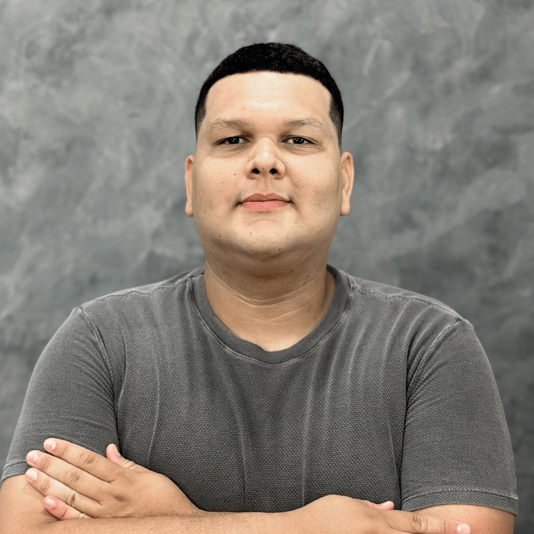
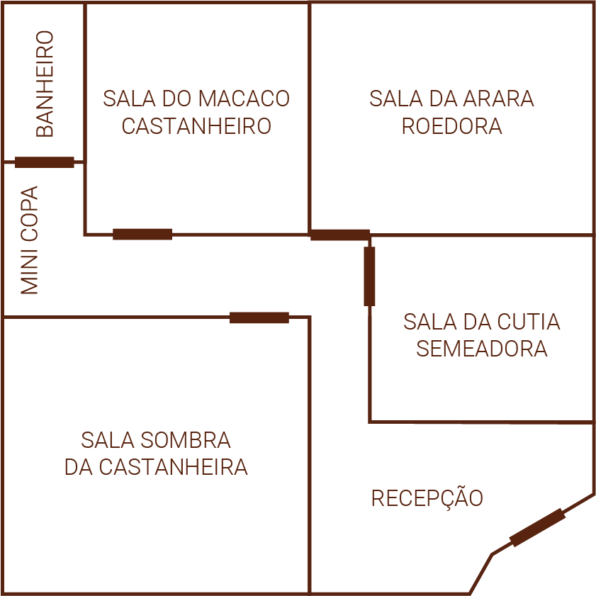

Por que o nome Ouriço?
A escolha do nome Ouriço surgiu da vontade de construir uma identidade regional e autêntica. O ouriço é a estrutura que protege e abriga a castanha-do-pará.
Robusto e formado por várias camadas, ele prepara, protege, nutre e possibilita o pleno desenvolvimento da castanha — assim como acreditamos que deve ser o processo educacional.
Missão
Promover a independência e o desenvolvimento dos alunos por meio de uma educação personalizada, em um ambiente acolhedor que respeita o potencial único de cada criança.
Visão
Ser referência em educação complementar, contribuindo para um futuro onde todas as crianças tenham oportunidades reais de aprendizado, crescimento e inclusão.
Valores
- Respeito: Escuta e empatia.
- Transparência: Comunicação clara.
- Excelência: Qualidade constante.
Quem faz o Ouriço acontecer
Marcus Brito
Diretor Administrativo

Matheus Liberal
Assessor Administrativo
Luana Miranda
Professora
Ana Beatriz
Professora
Ana Karina
Professora
Um espaço planejado para acolher e inspirar
O Ouriço conta com salas pedagógicas individuais, calmas e estimulantes, além de sala multiuso, recepção acolhedora e copa adaptada.
Sala da Arara Roedora
Ambiente estimulante para criatividade.
Sala do Macaco Castanheiro
Foco e concentração.
Sala da Cutia Semeadora
Desenvolvimento e autonomia.
Sala Sombra da Castanheira
Acolhimento e leitura.
